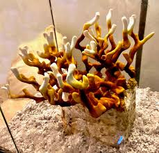

Lions maneIs a gourmet and medicinal mushroom.Has a higher profit margin than other mushrooms because of all the benefitsgourmet benefits:Has a meaty, slightly sweet flavor often compared to crab or lobster.Offers a tender, stringy texture that mimics seafood when cooked.Highly prized in gourmet cooking for its ability to absorb flavors and sauces.Commonly used as a plant-based seafood substitute in vegan and vegetarian dishes.Develops a rich, umami-packed crust when seared or roasted.Pairs well with garlic, butter, soy sauce, and herbs like thyme or rosemary.Valued in fine dining for its unique mouthfeel and ability to elevate dishes.Becoming more popular at farmers' markets and upscale restaurants due to its culinary and health benefits.medicinal benefits:Supports brain health by stimulating nerve growth factor (NGF) production.May improve memory, focus, and cognitive function.May reduce symptoms of anxiety and depression through neuroprotective effects.Helps repair nerve damage and supports nervous system recovery.Supports gut health and may protect against ulcers in the stomach lining.Has anti-inflammatory and antioxidant properties that reduce oxidative stress.May support heart health by improving fat metabolism and reducing cholesterol.Shows potential to regulate blood sugar and reduce diabetic nerve pain.

Reishi Grows in a antler form when grown in a high co2 environment Grows conks when grown with more FAE(fresh air exchange)Boosts immune system by enhancing white blood cell activity.May inhibit tumor growth and support cancer patient well-being.Reduces stress and fatigue as a natural adaptogen.Improves liver health by aiding detox and protecting liver cells.Supports heart health by lowering blood pressure and cholesterol.Helps regulate blood sugar and improve insulin sensitivity.Fights inflammation by reducing pro-inflammatory compounds.Provides antioxidants that combat oxidative stress and aging.has a bitter taste and often brewed into tea or made into tinctures with dual extraction
Pioppino
The Pioppino mushroom offers a robust, nutty flavor with a slightly chewy texture. It's
ideal for soups, stir-fries, and even gourmet recipes, thanks to its distinct taste that stands
out
but doesn't overpower.Cooking is recommended because it breaks down cell walls and enhances their flavor
Studies have shown that Pioppino mushrooms contain a variety of beneficial compounds,
including polysaccharides with antioxidant, anti-aging, and organ-protecting properties.
Additionally, they contain compounds with anti-inflammatory and anti-tumor attributes, as well
as
Agrocybin, a peptide with antifungal benefits.
Shiitakes
This is a moderately profitable mushroom that is a little tricky to get right indoors.
Its recommended that its grown on logs outside.
To get it right, you have to use low nutrients and cold shock it after curing. It also
has
to be kept at a low temperature to ensure curing is done properly. Spores are white, and it is best cooked because it can cause stomach issues in some
people
and may have a bitter taste.This is a mushroom that is used in traditional Japanese cooking; however, in recent
years,
there has been a decline in Japanese interest in this mushroom.It has an earthy taste and a unique texture. stems are not edible but cant be used in
stocks
or dried and powdered